정보통신기사(구) (2020-05-24 기출문제)
1과목: 디지털 전자회로
1. 다음 그림은 정류회로의 입력파형과 출력파형을 나타내었다. 주어진 입출력 특성을 만족시키는 정류회로는? (단, 다이오드의 문턱전압은 0.7[V]이고, 변압기의 권선비는 1:1이라 가정한다.)
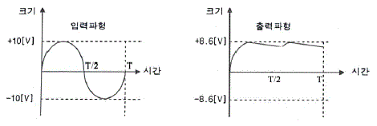
- 반파정류회로
- 중간탭 전파정류회로
- 2배압 정류회로
- 용량성 필터를 갖는 브리지 전파정류회로
(정답률: 79%)

2. 다음 정전압 회로에 대한 설명으로 틀린 것은?
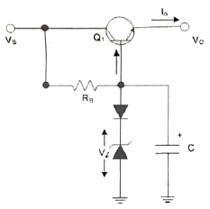
- 다이오드를 통하여 온도변화에 대해 안정하다.
- 캐패시터를 통하여 리플성분을 제거해 준다.
- 출력 전압(VO)은 제너전압(VZ)에 순방향 전압을 더한 값이다.
- 동전위 정전압 회로이다.
(정답률: 67%)
3. 다음 정류회로에 대한 설명으로 옳은 것은?
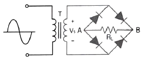
- 저전압 정류할 때 적합하다.
- VS가 양의 전압일 때 RL양단에 전류가 흐르지 않는다.
- RL에 걸리는 전압의 최대치는 T의 2차 전압의 최대치에 가깝다.
- 다이오드에 걸리는 역방향 전압의 최대치는 T의 2차 전압의 최대치에 2배에 가깝다.
(정답률: 66%)
4. 공통 베이스(Common Base) 증폭기 회로에서 컬렉터 전류가 4.9[mA]이고, 이미터 전류가 5[mA]이었을 때 직류전류 증폭률은?
- 0.98
- 1.02
- 1.27
- 1.31
(정답률: 78%)
5. 다음 궤환회로에 대한 설명으로 틀린 것은?
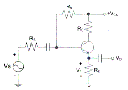
- 궤환으로 입력 임피던스는 감소한다.
- 궤환으로 전체 이득은 감소한다.
- 궤환으로 주파수 일그러짐이 감소한다.
- 궤환으로 출력 임피던스는 감소한다.
(정답률: 65%)
6. 전력증폭회로의 동작등급에서 가장 선형적인 동작이 가능한 것은?
- A급
- AB급
- B급
- C급
(정답률: 82%)
7. 다음 B급 SEPP(Single-Ended Push-Pull) 증폭기에서 트랜지스터 1개당 최대 전력 손실은 약 몇 [W]인가?
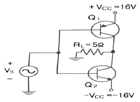
- 1.5[W]
- 2.5[W]
- 3.5[W]
- 4.5[W]
(정답률: 61%)
8. 다음과 같은 궤환 증폭회로(부궤환)의 궤환 증폭도(Ar)는?
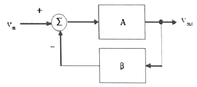
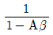
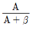
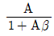
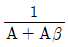
(정답률: 78%)
9. 다음은 윈-브리지 발진회로를 나타내었다. 발진주파수를 구하는 식은 어느 것인가? (여기서, R1=R2=R, C2=C1=C이다)
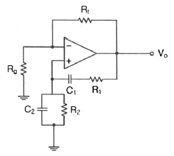
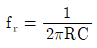
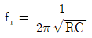
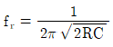
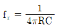
(정답률: 61%)
10. 다음 중 LC발진회로에서 발진주파수의 변동요인과 대책이 틀린 것은?
- 전원전압의 변동 : 직류안정화 바이어스 회로를 사용
- 부하의 변동 : Q가 낮은 수정편을 사용
- 온도의 변화 : 항온조를 사용
- 습도에 의한 영향 : 회로의 방습 조치
(정답률: 83%)
11. 그림과 같은 수정편의 등가회로에서 L0=25[mH], C0=1.6[pF], R0=5[Ω], C1=4[pF]일 때 직렬 공진 주파수는 약 얼마인가? (단, π=3.14)
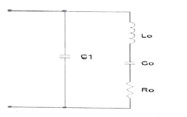
- 766.2[kHZ]
- 776.2[kHZ]
- 786.2[kHZ]
- 796.2[kHZ]
(정답률: 55%)
12. 진폭변조(Amplitude Modulation)에서 반송파 전력이 15[kW]일 때, 변조도를 100[%]로 변조하면 피변조파 전력은 얼마인가?
- 12.5[kW]
- 15[kW]
- 20[kW]
- 22.5[kW]
(정답률: 61%)
13. 다음 중 주파수 변조에 대한 설명으로 틀린 것은?
- 직접 FM과 간접 FM방식이 있다.
- 입력신호에 따라 반송파의 주파수를 변화시킨다.
- 선형 변조방식이다.
- 반송파로는 cos 함수 또는 sin 함수와 같은 연속함수를 사용한다.
(정답률: 79%)
14. 9,600[bps]의비트열을 16진 PSK로 변조하여 전송하면 변조속도는?
- 1,200[Baud]
- 2,400[Baud]
- 3,200[Baud]
- 4,600[Baud]
(정답률: 86%)
15. 다음은 FM복조(검파)회로의빌부이다. 이 회로의 설명으로 옳은 것은?
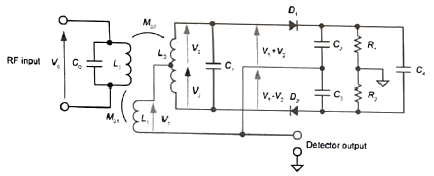
- 주로 FM복조, AM복조, 주파수 합성, 전화기의 톤(Tone) 검출 주파수 추이 그리고 모터 속도 제어 등에 이용한다.
- 입력신호의 진폭에 비례하여 출력전압 신호를 만들어 내는 장치이다.
- 진폭제한기(Limitter)의 기능을 겸하고 있는 주파수 변별기이다.
- 변별기 자체에 진폭제한 작용이 없으므로 앞단에 반드시 진폭제한기를 달아주어야한다.
(정답률: 67%)
16. 다음 중 입력 전압이 일정한 값 이상이 되면 출력 펄스가 상승하고, 입력 전압이 일정한 값이 이하가 되면 출력 펄스가 하강하는 특성을 이용하여 주파수 변환회로로 사용하는 회로는?
- 슈미트 트리거 회로
- 클리프 회로
- 리미터 회로
- 클랭핑 회로
(정답률: 76%)
17. 다음 중 파형 조작 회로에서 클리퍼(Clipper)회로에 대한 설명으로 옳은 것은?
- 입력 파형에서 특정한 기준 레벨의 윗부분 또는 아랫부분을 제거하는 것
- 입역 파형에 직류분을 가하여 출력 레벨을 일정하게 유지하는 것
- 입력 파형중에 어떤 특정 시간의 파형만 도출하는 것
- 입력의 Step전압을 인가하는 것
(정답률: 83%)
18. 다음 중 논리방정식이 잘못된 것은?
- A+1=A
- A∙0=0
- A+A∙B=A
- A∙(A+B)=A
(정답률: 79%)
19. 다음의 진리표에 해당하는 논리회로도는?
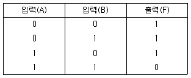
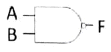
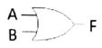
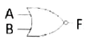
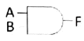
(정답률: 80%)
20. 다음 그림과 같은 회로의 명칭은?
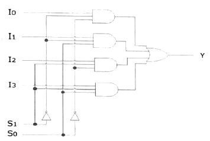
- 병렬가산기
- 멀티플렉서
- 디멀티플렉서
- 디코더
(정답률: 82%)
2과목: 정보통신 시스템
21. 다음은 모바일인터넷에 사용되는 기술의 특징을 설명한 것이다. 무엇에 대한 설명인가?
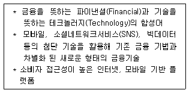
- 핀테크(FinTech)
- 크라우드 펀딩(Crowd Funding)
- 금융관리(Finance Management)
- 주문자 상표 부착 생산(OEM)
(정답률: 90%)
22. 전송 지연보다 데이터 무결성(Data Integrity)이 중요한 서비스는?
- 전화 서비스
- 파일 전송(FTP) 서비스
- TV 서비스
- 오디오 스트리밍 서비스
(정답률: 89%)
23. 정보통신 서비스의 각 기능 설명으로 알맞지 않은 것은?
- 전송 기능 : 통신 회선을 이용하여 정보를 전달하는 기능이다.
- 교환 기능 : 정보를 상호 교환하는데 필요한 회선 점유 방법 및 전송 방식을 결정하는 기능이다.
- 통신처리 기능 : 통신 신호의 형태 및 전달 방법 등을 변환하여 서로 다른 단말기간의 통신을 가능하게 하거나 서로 다른 시간대를 이용하여 정보를 교신할 수 있도록 하는 기능이다.
- 정보처리 기능 : 컴퓨터의 데이터처리 기능을 이용하여 정보의 생성, 가공, 저장, 변환 등은 물론 정보를 관리하나, 데이터베이스를 구축하지는 못하는 기능이다.
(정답률: 80%)
24. 10개의 지국을 그물(Mesh)형으로 연결하려 할 때 소요되는 최소 링크 수는?
- 25
- 35
- 45
- 55
(정답률: 90%)
25. 다음 중 X.25 표준에 대한 설명으로 틀린 것은?
- ITU-T가 개발한 패킷교환 방식의 장거리통신망 표준이다.
- X.25 계층 구조는 물리계층, 프레임계층, 상위계층으로 구성되어 있다.
- 패킷 방식 단말이 데이터 교환을 하기 위해 어떻게 패킷 네트워크에 연결되는가를 정의한다.
- 패킷의 다중화는 비동기식 TDM을 사용한다.
(정답률: 81%)
26. 프로토콜의 주요 요소 중에서 데이터 전송시기와 전송속도에 관한 특성을 나타내는 것은?
- 타이밍
- 구문
- 의미
- 표준
(정답률: 88%)
27. 공중 데이터망에서 패킷단말기를 위한 DCE와 DTE사이의 접속 규격을 정의한 표준안은?
- X.24
- X.25
- X.26
- x.27
(정답률: 81%)
28. OSI 7계층에서 단말기 사이에 오류 수정과 흐름제어를 수행하여 신뢰성 있고 명확한 데이터 전송을 하는 계층은?
- 네트워크계층
- 전송계층
- 데이터링크계층
- 표현계층
(정답률: 64%)
29. 다음 중 표준화 절차에 대한 순서로 맞는 것은?
- 기초와 기반연구-표준구현-표준제정-표준시험-표준수정과 보안, 폐기
- 기초와 기반연구-표준제정-표준구현-표준시험-표준수정과 보안, 폐기
- 기초와 기반연구-표준제정-표준구현-표준수정과 보안, 폐기-표준시험
- 기초와 기반연구-표준시험-표준제정-표준구현-표준수정과 보안, 폐기
(정답률: 79%)
30. 4[Gbps](상향 1[Gbps], 하향 3[Gbps])급 용량의 FTTH회선이 있다고 가정한다. 하향 회선을 기준으로 할 때 괄호 안에 들어갈 최대수용 가능한 가입자 수는 약 얼마인가?
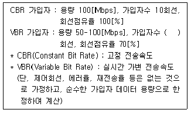
- 80회선
- 57회선
- 21회선
- 11회선
(정답률: 71%)
31. 근거리통신망(LAN)의 매체 접근 제어(Media Access Control) 프로토콜 중 패킷 충돌이 발생하지 않는 방식은?
- CSMA/CD
- Slotted ALOHA
- ALOHA
- Token Ring
(정답률: 75%)
32. 광대역통합망(BcN : Broadband Convergence Network)의 계층구조 중 전달망 계층에 대한 설명으로 옳지 않은 것은?
- 광대역(Broadband) 서비스 제공
- 이동망 사용자의 이동성(Mobility) 확보
- 서비스 보장(QoS) 및 정보보안
- 소프트스위치에 의한 다양한 서비스 구현
(정답률: 66%)
33. 다음 중 만물인터넷(Internet of Everything)을 구성하는 핵심요소가 아닌 것은?
- 사람
- 데이터
- 프로세서
- OXC
(정답률: 79%)
34. IPv4의 C 클래스 네트워크를 26개의 서브넷으로 나누고, 각 서브넷에는 4~5개의 호스트를 연결하려고 한다. 이러한 서브넷을 구성하기 위한 서브넷 마스크 값은?
- 255.255.255.192
- 255.255.255.221
- 255.255.255.240
- 255.255.255.248
(정답률: 65%)
35. 비트의 신호 세기를 강화시켜 재전송시켜주는 장비는?
- Repeater
- Bridge
- Router
- Gateway
(정답률: 87%)
36. 네트워크 자원들의 상태를 모니터링하고 이들에 대한 제어를 통해서 안정적인 네트워크 서비스를 제공하는 것을 무엇이라 하는가?
- 게이트웨이 관리
- 서버 관리
- 네트워크 관리
- 시스템 관리
(정답률: 86%)
37. 다음 중 VPN(Virtual Private Network)에서 사용하지 않는 터널링 프로토콜은 무엇인가?
- IPSec
- L2TP
- PPTP
- SNMP
(정답률: 70%)
38. 다음 중 네트워크의 가용성을 위한 서비스 중단 방지책으로 틀린 것은?
- 네트워크의 단순화
- 네트워크와 서버의 이중화
- 소프트웨어의 이중화
- 성능 향상을 위한 하드웨어 수시 업그레이드
(정답률: 77%)
39. 암호화 형식에서 4명이 통신을 할 때, 서로 간 비밀통신과 공개통신을 하기 위한 키의 수는?
- 비밀키 2개, 공개키 4개
- 비밀키 4개, 공개키 6개
- 비밀키 6개, 공개키 8개
- 비밀키 8개, 공개키 10개
(정답률: 86%)
40. 다음 중 방화벽의 구성형태에 해당하지 않는 것은?
- 패킷 필터링
- 서킷 게이트웨이
- 프록시 어플리케이션 게이트웨이
- SSL-VPN
(정답률: 78%)
3과목: 정보통신 기기
41. 다음 중 통신제어 장치의 설명으로 올바른 것은?
- 중앙처리 장치의 부하를 가중시킨다.
- 통신회선의 감시 및 접속, 전송오류검출을 수행한다.
- 회선접속장치를 원격처리장치로 연결한다.
- 나이퀴스트 주기보다 짧게 하여 표본화할 경우에 발생한다.
(정답률: 84%)
42. 다음에서 설명하는 내용은 정보단말기의 어떤 기술을 설명한 것인가?
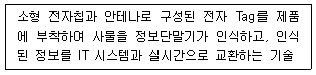
- IPTV
- PLC
- RFID
- HSDPA
(정답률: 90%)
43. 정보통신시스템의 통신 회선 종단에 위치한 신호변환장치 중에서 디지털 전송로인 경우 송신측에서 단극성 신호를 쌍극성 신호로 변환하는 장치는?
- CODEC
- DSU
- CSU
- CPU
(정답률: 84%)
44. 다음 중 허브(Hub)dp 대한 설명으로 옳은 것은?
- 구내 정보통신망(LAN)과 단말장치를 접속하는 장치이다.
- 구내 정보통신망(LAN)과 외부 네트워크를 연결하여 다중경로를 제어하는 장치이다.
- 개방형접속표준(OSI 7)에서 제5계층의 기능을 담당하는 장치이다.
- 아날로그 선로상의 신호를 분배, 접속하는 중계장치이다.
(정답률: 79%)
45. 다음 중 CSU(Channel Service Unit)의 기능으로 옳은 것은?
- 광역통신망으로부터 신호를 받거나 전송하며, 장치 양측으로부터의 전기적인 간섭을 막는 장벽을 제공한다.
- CSU는 오직 독립적인 제품으로 만들어져야 한다.
- CSU는 디지털 데이터 프레임들을 보낼 수 있도록 적절한 프레임으로 변환하는 소프트웨어 장치이다.
- CSU는 아날로그 신호를 전송로에 적합하도록 변환한다.
(정답률: 51%)
46. 다음 중 실제로 보낼 데이터가 있는 터미널에만 동적인 방식으로 각 부채널에 시간폭을 할당하는 것은?
- 지능 다중화기
- 광대역 다중화기
- 주파수분할 다중화기
- 역 다중화기
(정답률: 82%)
47. HFC 네트워크의 전송 매체로 가장 적합한 것은?
- 무선
- UTP케이블
- 평행 이선식(Twisted Pair)
- 광섬유케이블과 동축케이블
(정답률: 75%)
48. 다음 중 집중화기(Concentrator)의 구성 요소에 해당하는 것은?
- 모뎀
- 멀티플렉서
- 호스트 시스템
- 단일회선 제어기
(정답률: 52%)
49. 다음 중 디지털 지상파TV 방송의 전송방식이 아닌 것은?
- ATSC
- DVB-H
- ISDB-T
- DMB-T/H
(정답률: 76%)
50. 다음 DTV 수신기의 구성 요소 중 백색 잡음에 대해서 강하기 때문에 데이터 검출 회로에 사용하는 구성 요소로 옳은 것은?
- 튜너(Tuner)
- 트렐리스 복호기
- NTSC 제거 필터
- Reed-Solomon 복호기
(정답률: 56%)
51. 다음 중 화상회의 시스템 설명으로 적합하지 않은 것은?
- 동화상처리 방식에는 프레임 다중 방식 등이 있다.
- 음성처리 과정에서 하울링이나 에코현상이 일어날 수 있다.
- 음성, 영상압축 기술이 필요하며 광대역 고속 통신망이 유리하다.
- 정지화상 통신회의 시스템은 협대역 전송로를 사용하므로 가격이 비싸다.
(정답률: 88%)
52. 다음 중 음성 신호의 특성에 대해 잘못 설명한 것은?
- 인간의 효과적인 의사 전달 수단이다.
- 인간의 가청 주파수는 20~20,000[Hz]이다.
- 인간의 발성기관의 진동을 전기적인 신호로 변환한 것을 음성신호라 한다.
- 음성신호의 주요 정보는 5[kHz] 이상의 주파수 대역에 존재한다.
(정답률: 75%)
53. 트래픽 단위에서 180[HCS]는 몇 얼랑(Erlang)인가?
- 3[Erl]
- 4[Erl]
- 5[Erl]
- 6[Erl]
(정답률: 78%)
54. 위성통신방식의 종류가 아닌 것은?
- 랜덤 위성 방식
- 위상 위성 방식
- 정지 위성 방식
- 항행 위성 방식
(정답률: 70%)
55. 다음 중 무선 통신 송신기의 구성으로 틀린 것은?
- 전력 증폭회로
- 고주파 증폭회로
- 저주파 증폭회로
- 중간주파 증폭회로
(정답률: 69%)
56. 다음 중 위성 중계기의 구성요소가 아닌 것은?
- 송신부
- 수신부
- 헤드엔드
- 주파수 변환부
(정답률: 82%)
57. WPAN(Wireless Personal Area Network) 기술의 확산으로 멀티미디어 기기간 연결이 많아지고 다양한 서비스가 제공되고 있다. 다음 중 WPAN 기술에 해당되지 않는 것은?
- UWB
- Zigbee
- Bluetooth
- PLC
(정답률: 85%)
58. 멀티미디어 특성에 대한 설명 중 바르지 못한 것은?
- 비디오, 오디오 등 두 가지 이상의 미디어를 동시에 수용할 수 있어야 한다.
- 멀티미디어를 하나의 시스템에서 사용할 수 있어야 한다.
- 멀티미디어 통신 서비스는 원격회의, 인터넷 방송 등이 있다.
- 모든 정보를 아날로그화하여 저장, 편집이 쉽도록 하여야 한다.
(정답률: 86%)
59. 다음 중 USB 특징으로 틀린 것은?
- Plug and Play 기능 지원
- 컴퓨터 기반의 병렬 인터페이스 표준
- USB 2.0에서 최대접속기기는 127개 이다.
- 장착된 USB 장치와 Master-Slave 형태로 정보 교환
(정답률: 65%)
60. Full HD(1920X1080화소) TV방송보다 4배 이상 화잘이 선명한 ‘4K급 초고화질’ TV방송 및 실물에 가까운 생생한 화잘을 제공하는 멀티미디어기기는 무엇인가?
- 3DTV
- Smart TV
- UHD TV
- IPTV
(정답률: 90%)
4과목: 정보전송 공학
61. 다음 중 엘리에싱(Aliasing) 현상이 발생하는 원인으로 알맞은 것은?
- 나이퀴스트 주파수보다 높게 하여 표본화할 경우 발생한다.
- 나이퀴스트 주파수보다 낮게 하여 표본화할 경우 발생한다.
- 나이퀴스트 주파수로 표본화했을 경우 발생한다.
- 나이퀴스트 주기보다 짧게 하여 표본화할 경우에 발생한다.
(정답률: 81%)
62. 5[kHz]의 음성신호를 재생시키기 위한 표본화 주기는?
- 225[μs]
- 200[μs]
- 125[μs]
- 100[μs]
(정답률: 62%)
63. 다음 중 파장분할다중화(WDM) 방식의 특징이 아닌 것은?
- 하나의 광섬유에 동시에 전송
- 광손실 보상을 위해 광증폭기를 사용
- 중장거리보다 단거리 통신에 주로 사용
- 여러 파장대역을 동시에 전송하는 광 다중화 방식
(정답률: 73%)
64. 16진 PSK를 사용하는 시스템에서 데이터 신호속도가 12,400[bps]라면 변조속도는 얼마인가?
- 775[baud]
- 1,550[baud]
- 3,100[baud]
- 6,200[baud]
(정답률: 87%)
65. 다음 중 파장분할다중화(WDM) 기술에 대한 설명으로 적합하지 않는 것은?
- 광섬유의 손실이 적은 500[nm] 영역이 주로 사용된다.
- 장거리 전송을 위해 EDFA같은 광증폭기가 필수적으로 필요하다.
- 여러 채널을 광학적으로 다중화하여 한 개의 광섬유를 통해 전송한다.
- 변조방법, 아날로그/디지털 등의 전송 형태에 관계없이 어떠한 광신호의 전달에도 이용될 수 있다.
(정답률: 52%)
66. 최대 전송률을 예상할 수 있는 나이퀴스트 공식으로 맞는 것은? (단, C는 채널용량, B는 전송채널의 대역폭, M은 진수, S/N은 신호대잡음비)
- C = B×log2(M)
- C = 2×B×log2(M)
- C = B×log2(M×1+S/N)
- C = 2×B×log2(M×(1+S/N))
(정답률: 86%)
67. 다음 중 인터넷상에서 이동성(Mobility)을 지원하는 Mobile IP 기능의 동작원리를 가장 정확하게 설명한 것은?
- 이동통신에서 사용되고 있는 전력제어와 유사한 원리로 이루어진다.
- 이동한 지역에서 새로 할당 받은 IP 주소인 바인딩(Binding)을 사용한다.
- 원래사용하던 IP주소를 계속 사용하는데, 이동한 지역까지의 연결에는 터널링 기술을 적용하여 연결을 연장시킨다.
- 이동 가입자를 식별하는 IP주소와 이동한 지역에서 새로 할당 받은 IP 주소간을 매핑시켜서 이동성을 지원한다.
(정답률: 71%)
68. 다음 중 전송로의 동적 불완전성 원인으로 발생하는 에러로 알맞은 것은?
- 지연 왜곡
- 에코
- 손실
- 주파수 편이
(정답률: 69%)
69. 다음 중 광통신시스템에서 전송 속도를 제한하는 주된 요인으로 알맞은 것은?
- 광 분산
- 광 손실
- 전반사
- 굴절
(정답률: 67%)
70. 다음 중 광통신에서 사용되는 레이저의 특징으로 틀린 것은?
- 간섭성이 좋다.
- 매우 순수한 단색광을 방출한다.
- 단위면적당 출력이 매우 강하다.
- 직진성이 약하다.
(정답률: 88%)
71. 동기식 전송(Synchronous Transmission)의 설명 중 틀린 것은?
- 전송속도가 비교적 낮은 저속 통신에 사용한다.
- 전 블록(또는 프레임)을 하나의 비트열로 전송할 수 있다.
- 데이터 묶음 앞쪽에는 반드시 동기문자가 온다.
- 한 묶음으로 구성하는 글자들 사이에는 휴지 간격이 없다.
(정답률: 74%)
72. 기호속도가 1[kHz]이고 4개의 기호확률이 1/2, 1/4, 1/8, 1/8일 때 엔트로피율은 얼마인가?
- 1,750[bps]
- 1,850[bps]
- 1.900[bps]
- 2,000[bps]
(정답률: 83%)
73. 비동기 전송 방식의 특징으로 가장 옳은 것은?
- 문자와 문자 사이에 일정치 않은 휴지 시간이 존재할 수 있다.
- 시작 비트와 정지 비트 없이 출발과 도착 시간이 정확한 방식이다.
- 비트열이 하나의 블록 또는 프레임의 형태로 전송된다.
- 모뎀이 단말기에 타이밍 펄스를 제공하여 동기가 이루어진다.
(정답률: 74%)
74. 블록동기방식 중 문자동기방식에 대한 설명으로 옳지 않은 것은?
- 데이터블록 앞에 데이터의 시작을 알리는 전송제어 코드 ‘STX’ 사용
- 전송 시 동기용 전송 제어코드 ‘SYN’ 2개 이상 사용
- 데이터 전송의 끝을 의미하는 ‘END’ 제어신호 사용
- 에러를 체크하기 위한 에러제어코드 ‘BCC’사용
(정답률: 75%)
75. 다음 중 VLAN의 설명으로 옳은 것은?
- 유니캐스트 도메인(Unicast Domain)을 분리한다.
- 브로드캐스트 도메인(Broadcast Domain)을 분리한다.
- 애니캐스트 도메인(Anycast Domain)을 분리한다.
- 멀티캐스트 도메인(Multicast Domain)을 분리한다.
(정답률: 69%)
76. 다음 중 라우터의 주요 기능으로 틀린 것은?
- 프로토콜 변환
- 최적 경로 선택
- 이중 네트워크 연결
- 네트워크 혼잡상태 제어
(정답률: 60%)
77. 다음 중 서브넷팅(Subnetting)을 하는 이유로 옳지 않은 것은?
- IP주소를 효율적으로 사용할 수 있다.
- 트래픽의 관리 및 제어가 가능하다.
- 불필요한 브로드캐스팅 메시지를 제한할 수 있다.
- 서브넷 분할을 하면 호스트 ID를 사용하지 않아도 된다.
(정답률: 88%)
78. IEEE 802.1Q 표준 규격의 VLAN을 규별하는 VLAN ID를 전달하는 방법인 태킹(Tagging) 방법에 대한 설명으로 틀린 것은?
- 이더넷 프레임에서 소스 주소(Source Address) 바로 다음에 2바이트 TPID(Tag Protocol ID)를 삽입하여 VLAN 태그가 존재함을 알려준다.
- VLAN 태그를 인식하지 못하는 구형 장비는 알려지지 않은 이더넷 프로토콜 타입으로 간주하여 폐기한다.
- TPID 바로 다음에 2바이트 TCI(Tag Control Information)를 삽입하여 태그 제어 정보로 사용한다.
- TCI 중 12비트인 VID(VLAN ID)는 각각의 VLAN을 식별하는데 사용하며, 총 4096개의 VLAN 구별이 가능하다.
(정답률: 51%)
79. 다음 중 블록 단위의 1의 수가 짝수 또는 홀수 인지를 행 단위로 체크하는 에러검출 방식은?
- 수평 패리티 체크 방식
- 수직 패리티 체크 방식
- 정 마크 정 스페이스 방식
- 군 계수 체크 방식
(정답률: 75%)
80. 다음 중 Stop-and-Wait ARQ 방식에 대한 설명으로 옳지 않은 것은?
- 가장 간단한 형태의 ARQ이다.
- 수신측에서는 오류 발생 유무에 따라 ACK이나 NAK 신호를 보낸다.
- 오류 검출 능력이 우수한 부호를 사용해야 한다.
- ARP 프로토콜에서 사용한다.
(정답률: 67%)
5과목: 전자계산기일반 및 정보통신설비기준
81. 주기억장치의 크기가 64[Mbyte], 캐쉬 크기가 64[kbyte]이고 주기억장치와 캐쉬 사이에 4[byte]블록 단위로 데이터 전송이 이루지는 시스템에서 연관사상(Associative Mapping)으로 관리된다. 이 때 캐쉬 1 라인(Line)에 필요한 태그(Tag)의 크기는?
- 8비트
- 10비트
- 22비트
- 24비트
(정답률: 48%)
82. 다음 중 컴퓨터에서 수를 표현하는 방식이 아닌 것은?
- 양자화 표현
- 1의 보수 표현
- 2의 보수 표현
- 부호화 - 절대치 표현
(정답률: 83%)
83. 다음 중 비동기 인터페이스(Asynchronous Interface)에 대한 설명으로 틀린 것은?
- 컴퓨터와 입출력 장치가 데이터를 주고받을 때 일정한 클록 신호의 속도에 맞추어 약정된 신호에 의해 동기를 맞추는 방식이다.
- 동기를 맞추는 약정된 신호는 시작(Start), 종료(Stop) 비트 신호이다.
- 컴퓨터 내에 있는 입출력 시스템의 전송 속도와 입출력 장치의 속도가 현저하게 다를 때 사용한다.
- 일반적으로 컴퓨터 본체와 주변 장치 간에 직렬 데이터 전송을 하기 위해 사용된다.
(정답률: 64%)
84. 다음 중 자기보수 코드(Self Complement Code)인 것은?
- 3초과 코드
- BCD 코드
- 그레이 코드
- 해밍 코드
(정답률: 75%)
85. 다음 중 예약 또는 증권 서비스 등에 적합한 처리 시스템 방식은?
- 시분할 처리 시스템
- 실시간 처리 시스템
- 그레이 코드
- 해밍 코드
(정답률: 87%)
86. 컴퓨터가 8비트 정수 표현을 사용할 경우 -25를 부호와 2의 보수로 올바르게 표현한 것은?
- 11100111
- 11100011
- 01100111
- 01100011
(정답률: 71%)
87. 병렬 프로세서의 한 종류로 여러 개의 프로세서들이 서로 다른 명령어와 데이터를 처리하는 진정한 의미의 병렬 프로세서로 대부분의 다중 프로세서 시스템과 다중 컴퓨터 시스템이 이 분류에 속하는 구조는?
- SISD(Single Instruction stream Single Data stream)
- SIMD(Single Instruction stream Multiple Data stream)
- MISD(Multiple Instruction stream Single Data stream)
- MIMD(Multiple Instruction stream Multiple Data stream)
(정답률: 80%)
88. 하나의 프린터를 여러 프로그램이 동시에 사용할 수 없으므로 논리 장치에 저장하였다가 프로그램이 완료 시 개별 출력할 수 있도록 하는 방식은?
- Channel
- DMA
- Spooling
- Virtual Machine
(정답률: 76%)
89. 8진수 (735.56)8을 16진수로 전환한 것은 어느 것인가?
- (1DD.B8)16
- (1DD.B1)16
- (EE1.B1)16
- (EE1.B8)16
(정답률: 60%)
90. Open Source로 개방되어 사용자가 변경이 가능한 운영체제는?
- Mac OS
- MS-DOS
- OS/2
- Linux
(정답률: 87%)
91. 다음 문장의 괄호 안에 들어갈 알맞은 것은?(단, 예외사항은 제외)
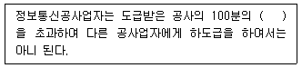
- 20
- 30
- 50
- 60
(정답률: 83%)
92. 기간통신사업자가 언론매체, 인터넷 또는 홍보매체 등을 활용하여 공개하여야 할 통신규약의 종류와 범위는 누가 정하여 고시하는가?
- 방송통신위원장
- 과학기술정보통신부장관
- 한국정보통신기술협회장
- 한국산업표준원장
(정답률: 81%)
93. 다음 중 과학기술정보통신부장관이 소속 공무원으로 하여금 방송통신 설비를 설치·운영하는 자의 설비를 조사하거나 시험하게 할 수 있는 경우가 아닌 것은?
- 유지·보수중인 방송통신설비인 경우
- 국가비상사태에 대비하기 위한 경우
- 재해·재난 예방을 위한 경우 및 재해·재난 발생한 경우
- 방송통신설비 관련 시책을 수립하기 위한 경우
(정답률: 78%)
94. 정보통신공사업법에서 사용하는 용어 중 감리에 대한 설명이다. 괄호에 들어갈 내용으로 맞게 나열된 것은?
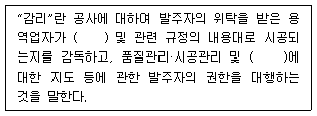
- 계획서, 비용절감
- 계획서, 안전관리
- 설계도서, 안전관리
- 설계도서, 비용절감
(정답률: 86%)
95. 다음 중 정보통신서비스 제공자 및 이용자의 책무가 아닌 것은?
- 정보통신서비스 제공자는 이용자의 개인정보를 보호하고 건전하고 안전한 정보통신서비스를 제공하여 이용자의 권익보호와 정보이용능력의 향상에 이바지하여야 한다.
- 이용자는 건전한 정보사회가 정착되도록 노력하여야 한다.
- 정보통신서비스 제공자 및 이용자는 합리적인 통신과금서비스를 이용할 수 있도록 상호 협조하여야 한다.
- 정부는 정보통신서비스 제공자단체 또는 이용자단체의 개인정보보호 및 정보통신망에서의 청소년 보호 등을 위한 활동을 지원할 수 있다.
(정답률: 69%)
96. 국선 수용 회선이 100회선 이하인 주배선반선의 접지저항 허용범위는 얼마인가?
- 1,000[Ω] 이하
- 100[Ω] 이하
- 10[Ω] 이하
- 1[Ω] 이하
(정답률: 64%)
97. 개인정보보호법 시행령에 따르면 공공기관이 영상정보처리기기의 설치·운영에 관한 사무를 위탁하는 경우에는 문서로 하여야 한다. 다음 중 해당 문서에 포함될 내용으로 잘못된 것은?
- 위탁 처리비용
- 위탁하는 사무의 목적 및 범위
- 재 위탁 제한에 관한 사항
- 영상정보에 대한 접근 제한 등 안전성 확보 조치에 관한 사항
(정답률: 65%)
98. 우리나라 전기통신에 관한 사항은 누가 관장하는가?
- 방송통신위원장
- 과학기술정보통신부장관
- 대통령
- 국무총리
(정답률: 87%)
99. 다음 중 정보통신공사의 하자담보책임기간으로 옳은 것은?
- 터널식통신구공사 : 10년
- 위성통신설비공사 : 5년
- 관로공사 : 3년
- 전송설비공사 : 1년
(정답률: 70%)
100. 다음 중 정보통신망의 안정성 및 정보의 신뢰성을 확보하기 위한 정보보호지침에 포함되지 않는 것은?
- 정당한 권한이 없는 자가 정보통신망에 접근·침입하는 것을 방지하거나 대응하기 위한 정보보호시스템의 설치·운영 등 기술적·물리적 보호조치
- 정보의 불법 유출·위조·변조·삭제 등을 방지하기 위한 기술적 보호조치
- 정보통신망의 지속적인 이용이 가능한 상태를 확보하기 위한 기술적·물리적 보호조치
- 정보통신망의 안정 및 신뢰성 확보를 위한 절차적 보호조치
(정답률: 51%)